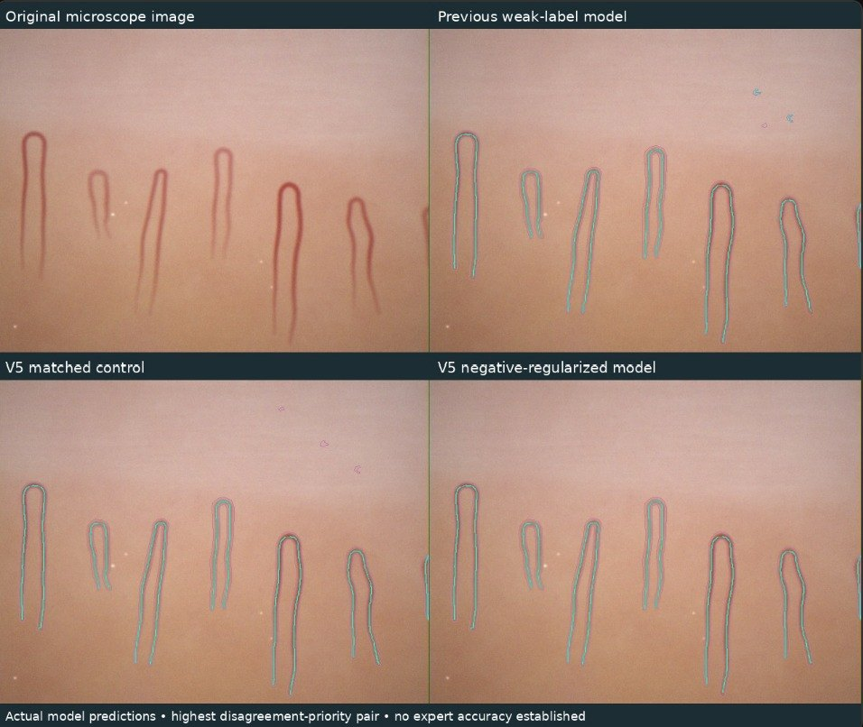

SG
Sujay Godala
Co-founder · Denmark High School
See it in action
Two unedited clips from our own setup. A drop of oil, a finger in the printed cradle, the microscope on its dock. Then the capillaries themselves, on the Microscope page.
Why it matters
Americans have diabetes.
CDC, 2023 data ↗of them have not been diagnosed.
CDC, 2023 data ↗of U.S. counties have no endocrinologist.
GoodRx Research, Dec 2024 ↗to build a Captrail. Specialist video capillaroscopes cost many times more.
See the parts list →Nailfold capillaries are studied in diabetes, systemic sclerosis, lupus, Raynaud’s and other conditions. Captrail does not diagnose any of them. It gives a clinician a measured, repeatable image to look at.
“The earliest signs of systemic sclerosis can show up in vessels thinner than a hair. Everyone deserves to have them looked at, not just people near a specialist clinic.”
“CapTrail brings microscope images and research evidence into one place for closer review.”
“If the hardware fits on a desk and costs a fraction of clinical equipment, screening can go where patients already are.”
The Captrail scan
Captrail turns a USB microscope, a 3D-printed finger cradle and a calibration card into a repeatable scan: every image measured in micrometers, every flag explained, and every decision left to a clinician.
How it works
Hardware at the bottom, software on top. Scroll, or tap any layer, to see what each one does.
Hardware to software
Four physical parts feed one software pipeline. What comes out is a set of measurements and flags a doctor can check, never a diagnosis.
The Microscope page
Screen recordings of our app in the browser. No install, no special software: the USB microscope shows up as a camera.
The AI, measured honestly
Our trained model outlines capillaries and labels their shape. Version 5 adds negative regularization: training penalizes it for marking vessels where there are none, so it stops tracing specks of noise.
False vessel area on 12 test control images. Lower is better.
These are our own tests. No expert accuracy has been established yet, and every label is a suggestion for a person to review.

Who it's for
School nurses, rural clinics and anyone without access to a specialist capillaroscope.
The build
Two 3D-printed parts, a USB microscope with its own stand, and a few inexpensive supplies. No motors, no custom mount, no second focusing mechanism.
| 01 | Jiusion 40X–1000X USB digital microscope + included stand640 × 480 images, advertised 40–1000× magnification, built-in adjustable LED | $25 |
| 02 | Captrail base board and finger cradle (3D printed, about 82 g PLA)Our shortened version of the Attune finger rest, plus a base board with pegs that lock the cradle in place and a dip that holds the microscope stand | $2 |
| 03 | Calibration slide (came with the microscope)Its coordinate cross: physical divisions must be confirmed from the reference specification | Included |
| 04 | Mineral oilOne tiny drop on the nailfold cuts surface glare | $3 |
| 05 | Cotton swabsApplying and removing the drop of oil | $2 |
Cradle based on the finger rest from Attune (dlx-designlab). Plus a computer and the microscope’s USB cable.
Print files: Base board .stl ↓ Base board .gcode ↓ Finger cradle .stl ↓ Finger cradle .gcode ↓
The .gcode files are sliced for an Elegoo Neptune 4 Pro with PLA. For other printers, slice the .stl yourself.
Read the full build guide →


Results
Scroll through each stage. Every number here comes from our own tests, and blank means we don’t have it yet.
Safety and limits
Captrail is a research prototype for image analysis, not a diagnostic tool. It does not replace a doctor.
We get consent before imaging anyone, every time.
Images stay on the device unless you choose to run AI analysis. We don’t store names with images, and we only image people who give consent.
Flags are a reason to look closer. Only a clinician interprets them.
Who we are
Four students from four Georgia high schools, building a cheaper, faster way to spot disease in the smallest blood vessels.
Open source
The website, the microscope app, the print files and our physics simulations all live in one public repository. Read it, build it, test it, improve it.
sujaygodala3-hub/captrailindex.html · scan.htmlWebsite and the in-browser microscope appapi/Server functions for AI review and voicecaptrail_print_files/Cradle and base board, .stl and .gcodesims/Microscope physics simulations and teststests/Automated checks for the model bridgeGet in touch
Clinicians, researchers and anyone curious about nailfold capillaroscopy: we’d love to hear from you.